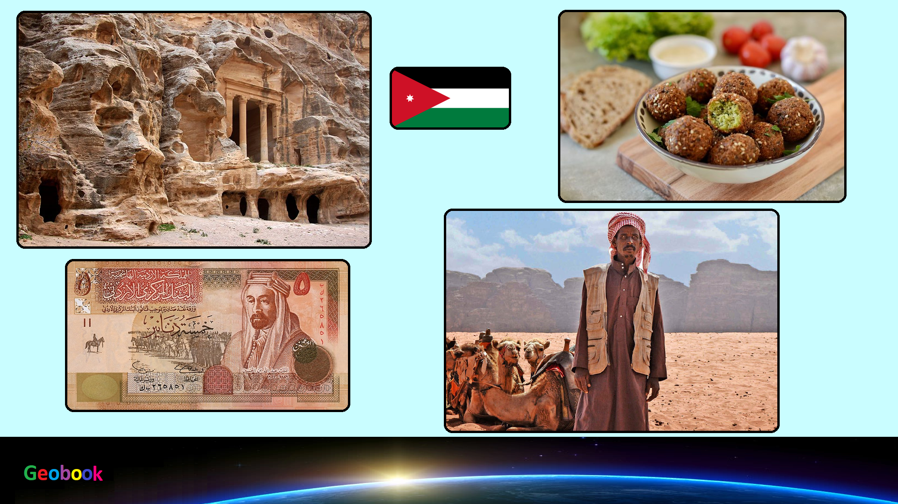

____
Традиционная еда
Шиш-Кебаб — эдакий иорданский ответ фрикаделькам. Разница в том, что шиш-кебаб насаживают на шампур, от души приправляют специями и обжаривают на открытом огне. Как правило, подают с горкой зелени, соусом и питой. В Иордании частенько встречается шиш-кебаб в виде привычного нам шашлыка, то есть, с насаженными на шампур кусочками мяса, чередующегося с овощами.
Фалафель — Фалафель можно попробовать в любой точке мира, однако настоятельно рекомендуем отведать его именно в Иордании. Тут фалафель готовят с большим количеством свежей зелени, от чего нутовые шарики получаются ярко-зеленого цвета с ароматной и воздушной текстурой внутри и хрустящей корочкой снаружи.
Зарб — барбекю по-бедуински — традиционное бедуинское блюдо, которое готовят весьма нетривиальным способом: в специальную яму с углями помещают огромное металлическое блюдо с мясом и овощами, которые запекают в целиком, далее блюдо запечатывают несколькими слоями фольги, всю конструкцию накрывают коврами и оставляют тушиться на несколько часов.
Мансаф — национальное блюдо, характеризующее саму Иордании. В то время как другие арабские страны имеют свои собственные вариации блюда, Иордания — это то это место, где можно попробовать мансаф в подлинном исполнении. Говоря по существу, это томленный ягненок, который готовят с секретным ингредиентом — джамиидом, твердым ферментированным йогуртом из овечьего или козьего молока
Шаварма — В Греции — сувлаки, в Турции — кебабы, а в Иордании топовый стрит-фуд — шаварма. Вариаций начинки — огромное множество, но наиболее распространенные — курица и ягненок. Рекомендуем отведать «королеву уличной кухни» в оригинальном исполнении в заведении «Reem» в Аммане. Неплохой вариант для сытного и бюджетного перекуса.
Шоробит Адас (чечевичный суп) — С первого взгляда суп из чечевицы звучит не слишком вдохновляюще, но не стоит забывать, что это блюдо с восточными нотками, а значит, что будет непременно питательным, наваристым и с доброй щепоткой разнообразных пряностей.
Меззе — Если хотите попробовать все самое национальное иорданское — смело заказывайте меззе. Только представьте: заказываете одну позицию из меню, а вам приносят уйму тарелочек с фалафелем, хумусом, арабским салатом (салат из помидоров и лука), баба гануш (пряная паста из баклажанов и тахины), долмой, оливками, маринованными и свежими овощами и, конечно же, лепешками. Хоть меззе и считается закуской перед основным приемом пищи, порции и разнообразие блюд позволяют наестся от души.
____
